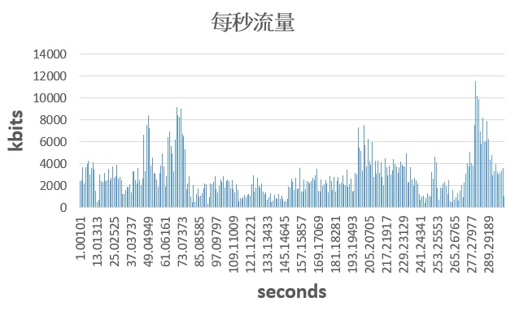
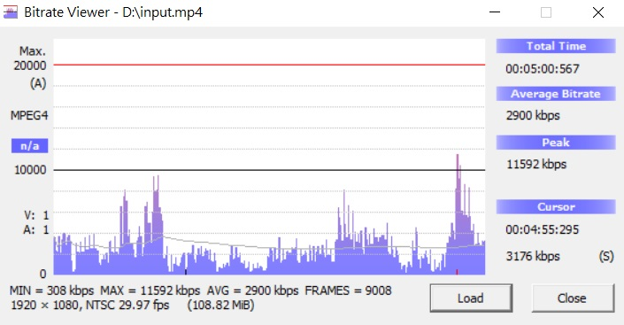
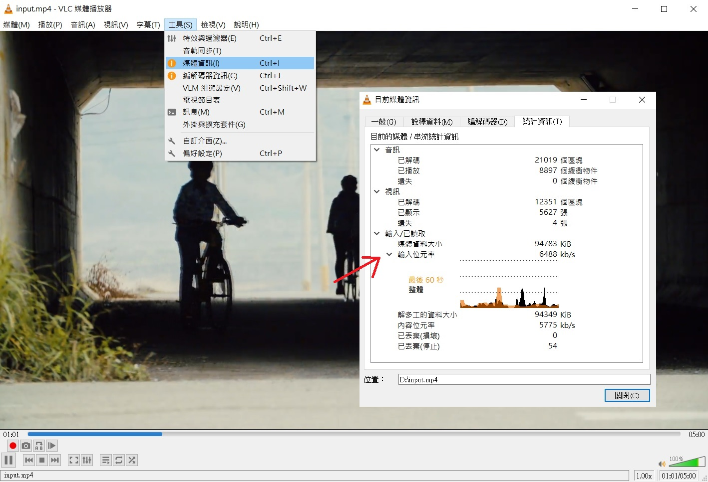

最近在研究適合網路串流的 VBR 轉檔
想知道整段影片的 Bitrate 是怎樣變化的
要是 maximum bitrate (最大流量) 高過網速時
可能就會出現緩衝轉圈圈的情況
如果用 MediaInfo 看，只會有 average bitrate (平均流量)
但實際上 Bitrate 是上下不停變動的
在開始之前
要先安裝好 FFmpeg 和 Excel 軟體～
列出影格大小與長度
首先用 ffprobe 來找出影格資訊
|
|
參數解釋:
-print_format csv
用 csv 格式列印出來-select_streams v:0
選擇 index 為 0 的視訊流-show_entries frame=pkt_size,pkt_duration_time
指定列出 frame 的 容量大小和時間長度input.mp4
要檢查的影片> output.csv
將印出的資料另存成 .csv 檔案
輸出結果如下:
| pkt_duration_time (second) | pkt_size (byte) |
|---|---|
| 0.033367 | 140288 |
| 0.033367 | 1992 |
| 0.033367 | 19638 |
| 0.033367 | 4110 |
| 0.033367 | 8653 |
| 0.033367 | 4188 |
| 0.033367 | 36206 |
| 0.033367 | 4686 |
| … | … |
累計秒數與大小
現在只得到每一格影格的流量
但不曉得每一秒的流量
這部測試影片是 29.97 格
先算大約 30 格
所以要固定間隔 30 個 frame 來相加
以下附上 excel 公式～
每秒容量大小
- 第 1 格 ~ 第 30 格 size 加總 ->
=SUM(OFFSET($B$1,(ROW(B1)-1)*30,,30,))*8/1000 - 第 31 格 ~ 第 60 格 size 加總 ->
=SUM(OFFSET($B$1,(ROW(B2)-1)*30,,30,))*8/1000 - 第 61 格 ~ 第 90 格 size 加總 ->
=SUM(OFFSET($B$1,(ROW(B3)-1)*30,,30,))*8/1000 - …
累計秒數長度
- 第 1 格 ~ 第 30 格 second 加總 ->
=SUM(OFFSET($A$1,(ROW(A1)-1)*30,,30,)) 1.+ (第 31 格 ~ 第 60 格 second 加總) ->=C1+SUM(OFFSET($A$1,(ROW(A1)-1)*30,,30,))2.+ (第 61 格 ~ 第 90 格 second 加總) ->=C2+SUM(OFFSET($A$1,(ROW(A2)-1)*30,,30,))- …
參數解釋
- OFFSET 函數
傳回指定列數及欄數之儲存格範圍參照
OFFSET(reference, rows, cols, [height], [width])
- reference: 起始參照位置
- rows: 往上或往下的參照列數
- cols: 往左或往右的參照欄數
- height: 要傳回參照的列數高度 (選填)
- width: 要傳回參照的欄數寬度 (選填)
- SUM 函數
加總儲存格參照範圍的值
SUM(number1,[number2],...)
- number1: 可以是數字、一個儲存格參照、一個儲存格範圍
- number2: 同上 (選填)
- 換算單位
*8/1000這是要幹嘛的呢？
因為 ffprobe 列出的單位是 byte
所以要換算成 Kbit
1 byte = 8 bits
1 bit = 0.001 kbit
輸出結果如下:
| pkt_duration_time | pkt_size | 累計秒數 (second) | 每秒大小 (kbit) |
|---|---|---|---|
| 0.033367 | 140288 | 1.00101 | 3550.312 |
| 0.033367 | 1992 | 2.00202 | 2459.352 |
| 0.033367 | 19638 | 3.00303 | 2504.12 |
| 0.033367 | 4110 | 4.00404 | 3661.992 |
| 0.033367 | 8653 | 5.00505 | 2185.192 |
| 0.033367 | 4188 | 6.00606 | 3699.024 |
| 0.033367 | 36206 | 7.00707 | 3951.6 |
| 0.033367 | 4686 | 8.00808 | 4252.92 |
| … | … | … | … |
接著就可以用圖表功能畫出 Bitrate 變化囉～

其他軟體
看完上面這個笨方法之後
有沒有其他比較輕鬆的方式呢？
Bitrate Viewer
這是一個免費軟體
主要支援 MPEG-1, MPEG-2, MPEG-4 等格式
只要把影片拖拉進軟體內
就會自動跑出圖表

VLC media player
這是一個開源的免費軟體
它可以在播放影片的時候顯示目前的流量
- 播放影片
- 點擊功能表
工具>媒體資訊 - 切換到
統計資訊 - 展開
輸入位元率
這樣就可以看到目前使用了多少 Bitrate

以上方法看起來
還是用 Bitrate Viewer 最快了
但支援的格式有限
如果想分析 HEVC (H.265) 或 VP9 之類
可能就要找其他軟體或用笨方法了哈哈